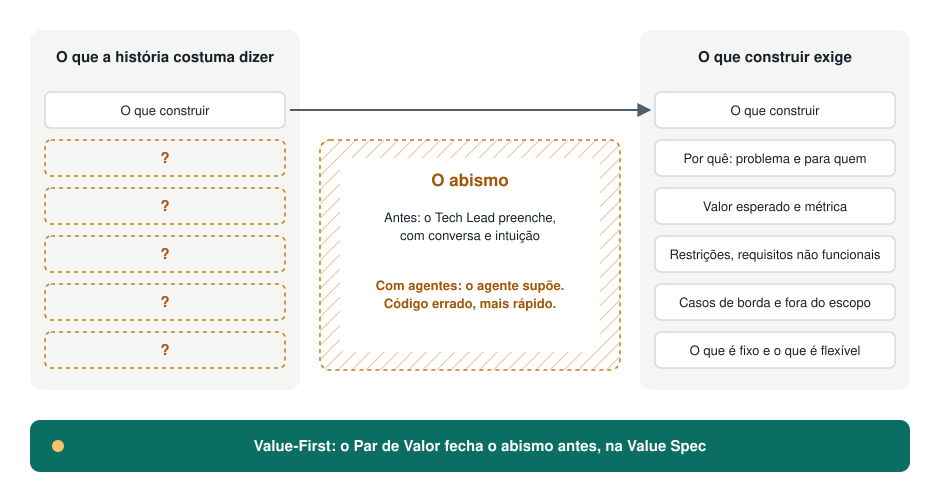
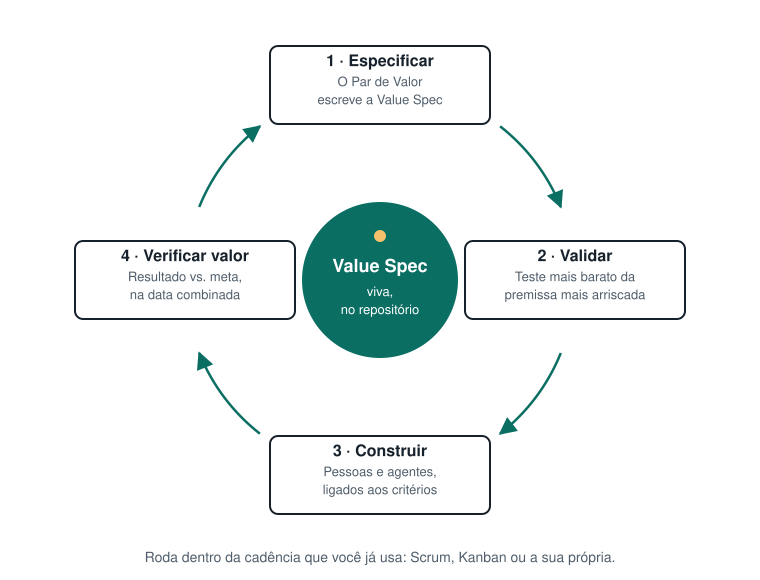
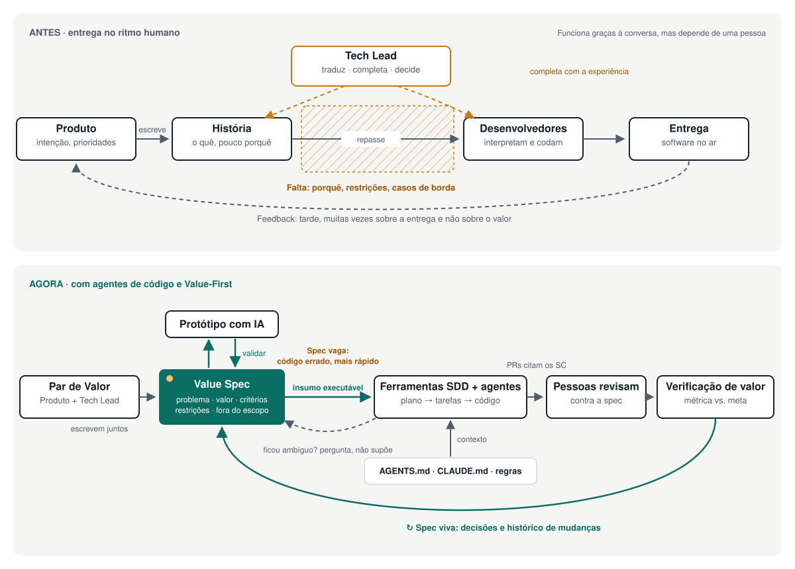
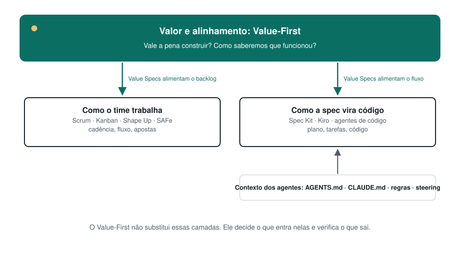

Do ritual ao valor, da spec ao software.
Value-First Development
O Value-First Development torna explícito, compartilhado e mensurável o valor de cada trabalho antes que alguém o construa, para que pessoas e agentes de código construam a coisa certa, e não só construam rápido.
Uma camada leve sobre Scrum, Kanban ou o seu próprio processo. Código aberto.
O abismo entre a spec e o desenvolvimento
Cada forma de trabalhar que usamos hoje respondeu a um problema real. Escrever antes nos deu clareza, o Agile nos deu ciclos curtos de feedback e o Scrum, uma cadência estável. O Value-First mantém tudo isso.
Em muitos times, porém, as cerimônias continuam e o propósito se perde. As histórias descrevem o quê, raramente o porquê, e quase nunca as restrições ou como o sucesso será medido.
Alguém preenche esse abismo, e geralmente é o Tech Lead: traduzindo, completando e decidindo, quase sempre sem que ninguém veja. Funciona, mas o trabalho fica invisível, depende de uma pessoa e acontece tarde.

A ideia
Um documento curto e vivo por item de valor, escrito por Produto e Tech Lead juntos.

Value Spec
Uma página: problema, valor esperado, critérios de sucesso mensuráveis, restrições, o que é fixo e o que é flexível. Versionada junto com o código e legível por pessoas e agentes.
Par de Valor
Produto responde pelo problema e pelo valor. O Tech Lead responde pela viabilidade e por tornar a spec construível. O trabalho de tradução ganha nome e parceiro.
O ciclo
Especificar, validar, construir, verificar o valor e voltar à spec. Roda dentro da cadência que você já tem.
Seis princípios
O valor fica explícito antes do trabalho
Problema, valor e como saberemos, ditos desde o início. Prazo e escopo servem ao valor.
A spec é um contrato de valor, e ela vive
Curta, versionada com o código, alterada com motivo. Para agentes, é insumo executável.
Validar antes de construir
Reduzir a maior incerteza pelo meio mais barato. Protótipos são evidência, não entrega.
Produto e Tecnologia especificam juntos
Dois donos por spec. O trabalho de tradução do Tech Lead fica explícito e compartilhado.
Mudar o plano é informação, não falha
Fixo e flexível são combinados no início. Mudanças entram na spec, à vista de todos.
Pessoas respondem pelo resultado; a IA acelera
Decisões, revisão, segurança e dívida técnica continuam com pessoas. Mede-se resultado, não volume.
Specs na era da IA
Agentes de código leem specs e agem a partir delas. Isso transforma o abismo de incômodo em gargalo.

A spec virou insumo executável
Uma pessoa interpreta uma história vaga. Um agente a executa e supõe o resto. Os modelos são “excepcionais em completar padrões, mas não em ler mentes” (GitHub, 2025).
A IA amplifica o sistema em que entra
A pesquisa DORA de 2025 descreve a IA como amplificador e conclui que, sem foco no usuário, adotá-la pode prejudicar o desempenho do time (DORA 2025).
O Tech Lead como engenheiro de especificação
O trabalho de tradução passa a ser central. O Value-First o divide com Produto em vez de deixá-lo com uma pessoa só.
Uma camada acima das ferramentas
Spec Kit, Kiro e AGENTS.md cuidam do caminho da spec ao código. O Value-First decide o que vale construir e como saberemos que funcionou.

Limites, sem rodeios. Ganho de produtividade não é garantido, código gerado por IA precisa de revisão humana, e specs pesadas feitas antes de tudo podem trazer o waterfall de volta. O Value-First responde com specs pequenas, focadas em valor e vivas.
Ler o argumento completo e as fontes →Você é Value-First se…
Sinais que dá para ver no trabalho, não declarações de intenção.
- Todo item relevante em andamento tem uma Value Spec com pelo menos um critério de sucesso mensurável.
- Toda spec tem dois donos nomeados: Produto e Tech Lead.
- As specs ficam no repositório, e as instruções dos seus agentes apontam para elas.
- Itens arriscados ganham um protótipo ou spike antes do compromisso.
- Mudanças de escopo e de prazo aparecem como mudanças na spec, com motivo.
- Vocês verificam o valor depois da entrega e sabem dizer o que não funcionou.
- Pessoas revisam todo código gerado por IA, e a estabilidade é acompanhada junto com a velocidade.
Mapa de Valor
Para iniciativas maiores que uma spec. Como o C4 faz com a arquitetura: níveis de zoom, quatro regras, e dá para desenhar no quadro branco.
O mapa diz em que apostamos. A spec diz o que combinamos construir. As ferramentas dizem como construir.
- ResultadoPor quê, e como saberemos?
- FatiasO que primeiro, e em que apostamos?
- Value SpecO que combinamos construir nesta fatia?
Exemplo fictício, baseado no exemplo de template da VS-014.
Contatos financeiros pedem faturas ao suporte.
Tickets de fatura: ~120 → ≤ 40 / semana, 6 semanas após o lançamento
Fora: pagamento, edição de faturas↑ contribuem para
Aposta: clientes usam o portal em vez de mandar e-mail ao suporte (validada 5/6)
Em construçãoAposta: auditorias precisam de intervalos de datas (2 de 6 pediram)
PróximaAposta: receber é melhor que procurar (não validada)
Talvez↓ zoom na VS-014 = abrir a Value Spec dela
Problema, critérios de sucesso SC-1 a SC-4, restrições, decisões e instruções para agentes. Fica no repositório, não no mapa.
Ver a spec de exemplo →Quatro regras
- Toda caixa tem tipo, nome e uma frase.
- Todo resultado e toda fatia têm uma métrica ou um sinal.
- Toda seta tem um verbo.
- Um desenho por nível. Aproxime só onde precisar.
O mapa desenha os níveis 1 e 2. O nível 3 é a Value Spec, e o nível 4, código, não se desenha: testes e PRs citam os IDs dos SC da spec.
Experimente em um item nesta semana
- Escolha um item próximo com valor real e alguma incerteza.
- Escreva uma Value Spec em par. Uma página basta.
- Valide a premissa mais arriscada com o protótipo mais barato.
- Construa e verifique o valor na data combinada.